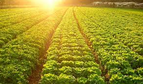

É a agricultura que realiza o plantio em larga escala de cultivos para atender a demanda da economia mundial.
A agricultura comercial, chamada de "agricultura moderna" ou de mercado, é a agricultura que realiza o plantio em larga escala de cultivos para atender a demanda da economia mundial.